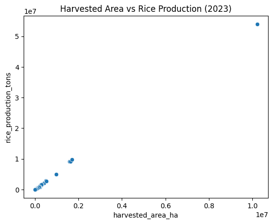
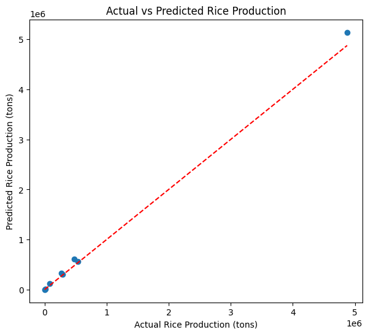

01 — OVERVIEW
Overview
The project models provincial rice production from harvested area using simple linear regression. It focuses on interpretable analysis, clear visual diagnostics, and a careful explanation of what a strong fit does and does not prove.
02 — EXPLORATORY ANALYSIS
Exploratory analysis
The scatter plot shows a strong positive linear relationship across provinces. The distribution supports a simple linear baseline and reveals no dominant nonlinear pattern.

03 — MODEL AND EVALUATION
Model and evaluation
The fitted regression line follows the observed data closely. Actual-versus-predicted values remain near the diagonal reference, while residuals show no obvious systematic structure.

04 — LIMITATIONS
Limitations
The model uses one explanatory variable and provincial aggregates. Future work can add yield, irrigation, climate, and multi-year observations to test whether the relationship remains stable.